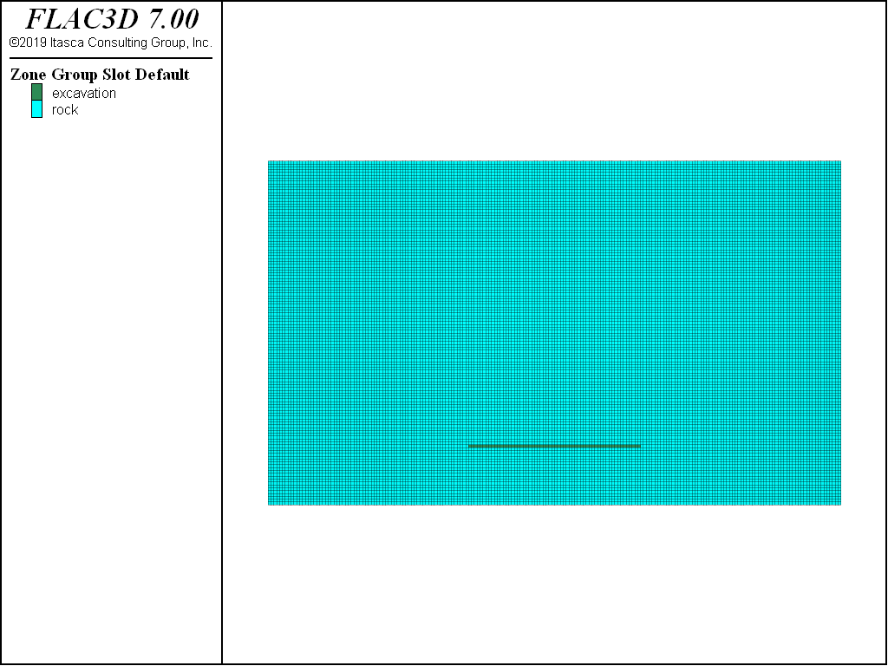
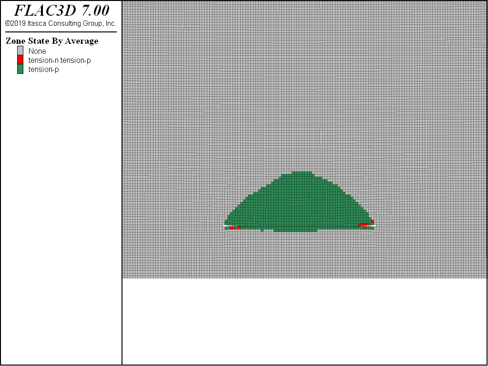
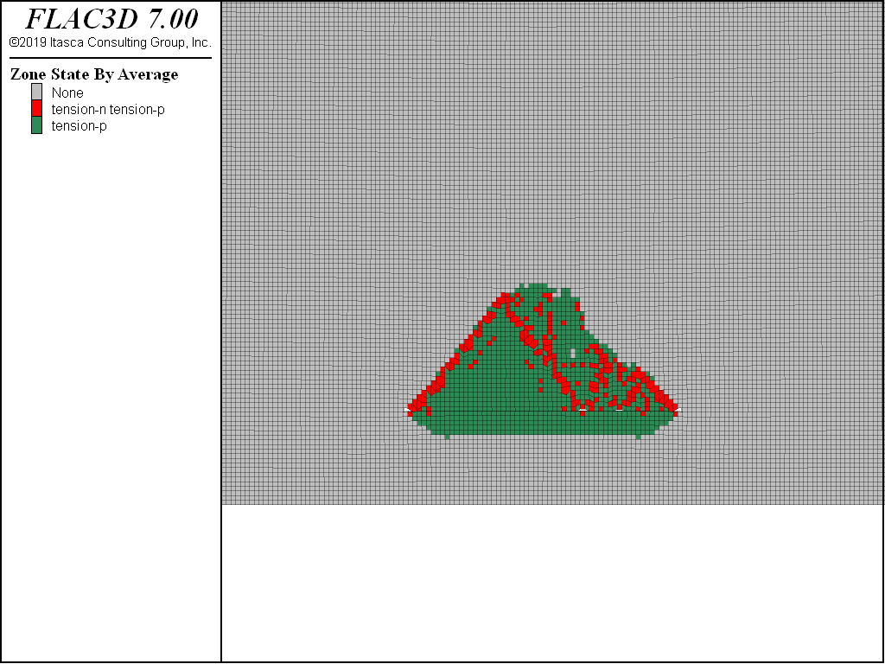
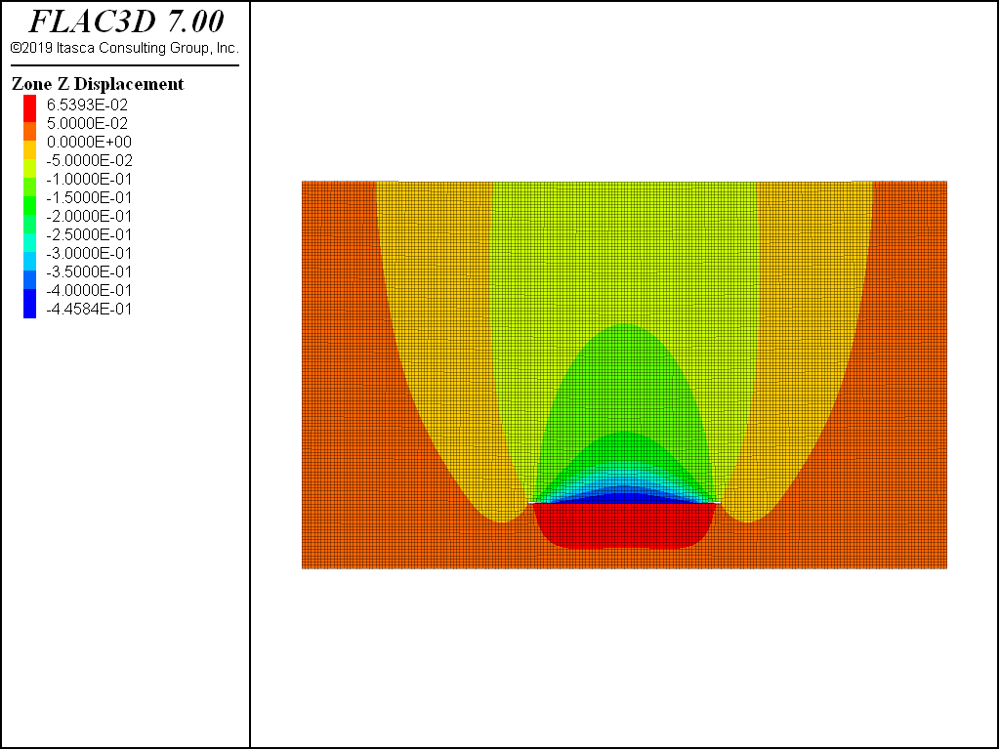
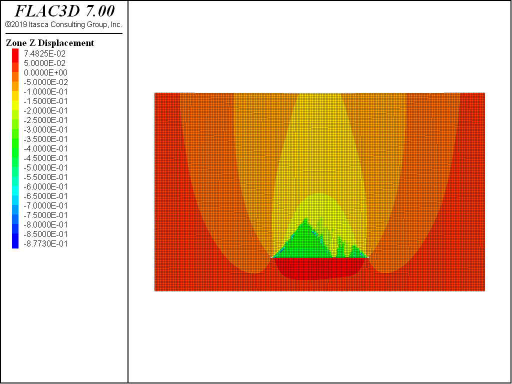
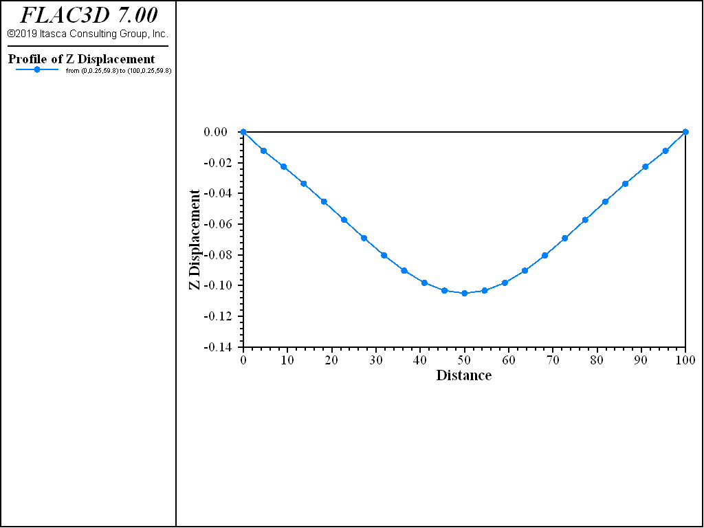
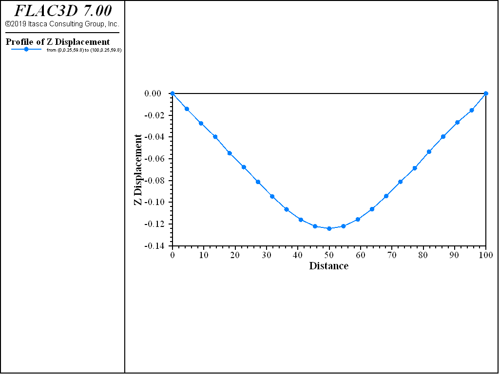

水平开挖体上方的地表沉降
问题描述
注意
要在 FLAC3D 中查看此工程，请使用菜单命令 。选择“ExampleApplications/HorizontalCut”，再选择“HorizontalCut.f3dprj”即可加载。该工程的主数据文件（main data file）在本示例末尾给出。
对采用 莫尔—库仑（Mohr-Coulomb） 模型和 Mohr-Coulomb 张拉裂缝（MohrT）（Mohr-Coulomb Tension Crack (MohrT)） 模型（材料参数相同，见表 1（Table 1））的计算结果，比较了水平开挖体上方的地表沉降（下沉）曲线。假定材料黏聚力非常大，以防止发生任何剪切破坏。
这是一个平面应变问题，模型尺寸为 100 m（长度）× 60 m（深度）。宽 30 m、高 1 m 的水平开挖体位于 15–15.5 m 深度处（底板深度）。假定模型底部和两侧为固定边界。竖向应力按与重力场相协调进行初始化。水平应力按侧压力系数 0.75 进行初始化。在开挖体的底板与顶板之间设置接触面，以使开挖体闭合时顶板与底板不发生重叠。材料密度为 1600 kg/m3，重力加速度假定为 10 m/s2。模型网格见图 1（Figure 1）。
| 材料参数 | 值 |
|---|---|
| \(K\) (Pa) | 4e7 |
| \(G\) (Pa) | 3e7 |
| \(\phi\) | 0 |
| \(\psi\) | 0 |
| \(c\) (Pa) | 1e20 |
| \(\sigma^t\) (Pa) | 2000 |
Mohr-Coulomb 模型和 MohrT 模型的拉伸破坏区分别绘于图 2（Figure 2） 和 图 3（Figure 3）。Mohr-Coulomb 模型和 MohrT 模型的竖向位移云图分别绘于图 4（Figure 4） 和 图 5（Figure 5）。本示例中 MohrT 模型预测的沉降（图 6（Figure 6））远大于 Mohr-Coulomb 模型预测的沉降（图 7（Figure 7））。
开挖体上方的网格单元最初在竖直方向发生拉伸，在本例中这导致拉伸破坏（对应于水平裂缝的形成与张开）。随后，随着开挖体闭合、顶板与底板接触，上覆岩层的持续变形将使紧邻顶板的网格单元中的竖向应变反向。应变的这种反向本应使张开的水平裂缝闭合。然而，Mohr-Coulomb 模型中不可逆的拉伸塑性应变会阻止这种裂缝闭合。（见采用 MohrT 模型的单网格单元加卸载试验（Single Zone Loading-Unloading Test with MohrT Model）。）
材料的表观剪胀（“棘轮效应”）将在竖向应变改变方向之后立即产生竖向压应力。这种作用于上覆岩层的反压（由压应力引起）将减小竖向变形和沉降。MohrT 模型允许水平裂缝完全闭合，避免了 Mohr-Coulomb 模型的人为效应——正是该效应导致本示例中沉降被低估。除沉降曲线之外，这两个模型结果的另一主要差异在于顶板上方破坏区的形状。


图 1：模型网格。


图 2：采用 Mohr-Coulomb 模型的拉伸破坏区。


图 3：采用 MohrT 模型的拉伸破坏区。


图 4：采用 Mohr-Coulomb 模型的竖向位移云图。


图 5：采用 MohrT 模型的竖向位移云图。


图 6：采用 Mohr-Coulomb 模型的竖向位移云图。


图 7：采用 MohrT 模型的竖向位移云图。
数据文件
HorizontalCut-MohrT.dat
model new
model large-strain off
model gravity 10
zone create brick size 200 1 120 point 0 (0,0,0) point 1 (100,0,0) ...
point 2 (0,0.5,0) point 3 (0,0,60) group 'rock'
zone group 'excavation' range position-x 35. 65. position-z 10. 10.5
zone cmodel assign mohr-coulomb-tension
zone property density 1600. bulk 4e7 shear 3e7 cohesion 1e20 tension 2000
zone gridpoint fix velocity range union position-x 0 position-x 100
zone gridpoint fix velocity-y
zone gridpoint fix velocity-z range position-z 0
zone initialize-stress ratio 0.75
model solve
zone gridpoint initialize displacement (0,0,0)
zone interface create by-face separate ...
range group 'excavation' group 'rock' position-z 10.5
zone interface node property stiffness-normal 4e8 stiffness-shear 4e8 ...
friction 30.
model large-strain on
;zone relax excavate range group 'excavation'
zone delete range group 'excavation'
model solve
model save 'mohrt'
| 这些内容对您有帮助吗？… 版权与免责声明 |
FLAC3D © 2019, Itasca | 原文更新于 2020 年 10 月 8 日 |